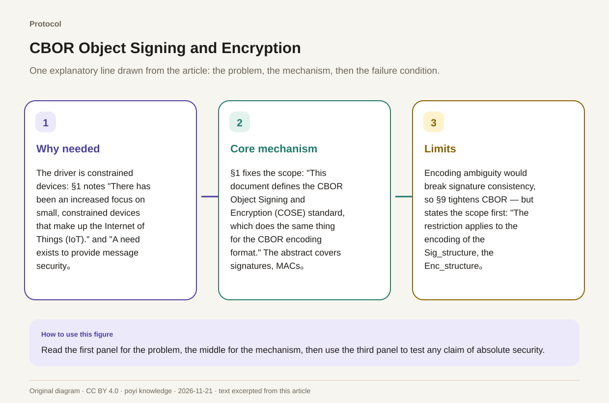
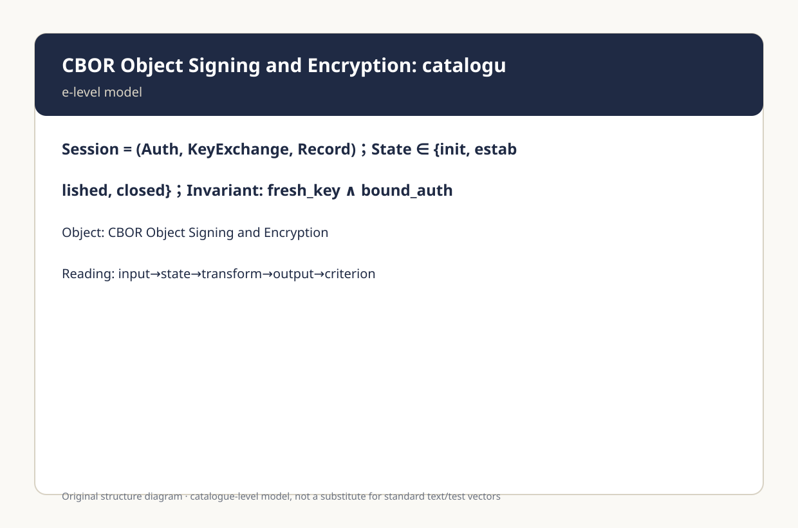

Principles
Protocol: CBOR Object Signing and Encryption (COSE 签名与加密格式). §1 fixes the scope: "This document defines the CBOR Object Signing and Encryption (COSE) standard, which does the same thing for the CBOR encoding format." The abstract covers signatures, MACs, encryption and key representation, adding "This specification additionally describes how to represent cryptographic keys using CBOR." §2 gives the shared array shape: "All of the message structures are built on the CBOR array type." with the first three elements being "The protected header parameters, encoded and wrapped in a bstr.", "The unprotected header parameters as a map." and the content — "The content is either the plaintext or the ciphertext, as appropriate."

Why it matters
The driver is constrained devices: §1 notes "There has been an increased focus on small, constrained devices that make up the Internet of Things (IoT)." and "A need exists to provide message security services for IoT, and using CBOR as the message-encoding format makes sense." §1.3 lists the deliberate departures from JOSE: "A single overall message structure has been defined so that encrypted, signed, and MACed messages can easily be identified and still have a consistent view.", "Binary encodings are used, rather than base64url encodings, to encode binary data." and "The authentication tag for encryption algorithms has been combined with the ciphertext." §2 stresses shared parsing code, designing the structures so different security message types reuse the same processing.
Applications
§2 enumerates four ways to identify a message type: "Identification of which type of message has been presented is done by the following methods:" — the first is contextual, "The specific message type is known from the context.", the second is the tag route, "The message type is identified by a CBOR tag.", and the fourth rides on the CoAP Content-Format option. §4.2 gives the single-signer tag — "A tagged COSE_Sign1 structure is identified by the CBOR tag 18." — and §5.2 the single-recipient encryption tag, "A tagged COSE_Encrypt0 structure is identified by the CBOR tag 16." §3.1 requires the algorithm field to be protected: "This header parameter MUST be authenticated where the ability to do so exists." §4.4 defines the bytes that get signed: "In order to create a signature, a well-defined byte string is needed. The Sig_structure is used to create the canonical form." with context strings including "“Signature1” for signatures using the COSE_Sign1 structure." §7 defines the key map: "The element “kty” is a required element in a COSE_Key map."

Limits & attacks
Encoding ambiguity would break signature consistency, so §9 tightens CBOR — but states the scope first: "The restriction applies to the encoding of the Sig_structure, the Enc_structure, and the MAC_structure." — it is not a general requirement on whole COSE messages. Within that scope, "Encoding MUST be done using definite lengths, and the length of the (encoded) argument MUST be the minimum possible length." with the example "This means that the integer 1 is encoded as “0x01” and not “0x1801”." §12 gives two key warnings: "Use of the same key for two different algorithms can leak information about the key." and "Use of “direct” as a recipient algorithm combined with a second recipient algorithm exposes the direct key to the second recipient". §3.1 warns key hints are unreliable: "Applications MUST NOT assume that “kid” values are unique." §1 also records a removal made for security reasons — the countersignature properties described for COSE_Sign1 had been stated incorrectly.
History
RFC 9052 is signed by J. Schaad (August Cellars), published August 2022 with “STD: 96” and “Obsoletes: 8152” in the header. §1.2 lists the changes from RFC 8152, starting with "Split the original document into this document and [RFC9053]." §1.4 explains why the structures are normative in prose rather than CDDL: "When COSE was originally written, the Concise Data Definition Language (CDDL) [RFC8610] had not yet been published in an RFC".
Worked example & verification
Formal model and reproduction steps
[\mathrm{Adv}^{\Pi}_A(\lambda)\le n\cdot\mathrm{Adv}^{\mathrm{prf}}F(\lambda)+\varepsilon{\mathrm{aead}}(\lambda)]
CBOR Object Signing and Encryption: the registered public parameters, key material or randomness, and message are mapped through the stated transformation to an output checked against the registered criterion. The worked example is a structural reproduction, not a new test vector; parameter ranges, standard versions and implementation details remain source-bound.
References
- Wikipedia search entry for COSE 签名与加密格式. https://zh.wikipedia.org/w/index.php?search=COSE%20%E7%AD%BE%E5%90%8D%E4%B8%8E%E5%8A%A0%E5%AF%86%E6%A0%BC%E5%BC%8F
- Handbook of Applied Cryptography (Menezes, van Oorschot, Vanstone). https://www.cacr.math.uwaterloo.ca/hac/
- RFC 9052: CBOR Object Signing and Encryption. https://www.rfc-editor.org/rfc/rfc9052
- Published standard/RFC for COSE 签名与加密格式. https://www.rfc-editor.org/rfc/rfc9052